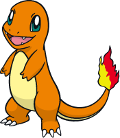

Jigglypuff es un Pokémon de tipo normal/hada2 introducido en la primera generación. A partir de la segunda generación es la evolución de Igglybuff. En la sexta generación se le añadió el tipo hada.
Si quieres saber más información sobre este pokemon visita:Jigglypuff
Charizard es un Charizard es un Pokémon de tipo fuego/volador introducido en la primera generación. Es la evolución de Charmeleon.
Si quieres saber más información sobre este pokemon visita:Charizard
Charmander Charmander es un Pokémon de tipo fuego introducido en la primera generación. 
Si quieres saber más información sobre este pokemon visita:Charmander